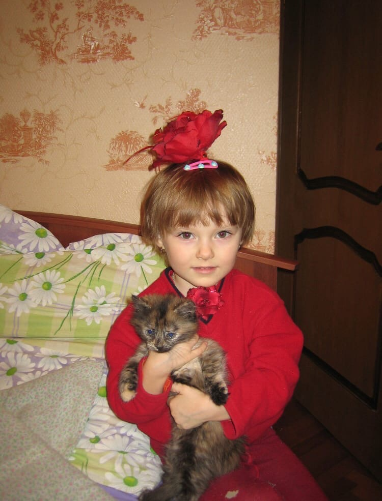

Резюме
Дата рождения: 27.11.2003
Проживание: г. Зеленоград
Основная информация:
 это я (=
Проживание: г. Зеленоград
Основная информация:
- editor, layout designer, journalist, advertiser, good person
- Выпускница Международного колледжа искусств и коммуникаций;
- Ex-PR MediaLine Communikation Groop; Ex-SMM BritGarage; Ex-korrespondent intercom.media;
- Немецкий A2; Английский B1;
- Знание программ: Word, Power Point, Excel, Adobe InDesign, Adobe Photoshop, Adobe Illustrator;
- Имеется опыт работы с HTML и CSS;
- «Специалист, который все усложняет работает неправильно. Профессионал должен уметь делать вещи простыми» – Ричард Брэнсон
- О себе: люблю котиков.Умею варить вкусный борщ (и другие супы).
Участие в проектах:
Авторская книга "Аутро"
«Аутро» символизирует конец развитию цивилизации, как обществу личностей. В будущем развивается только прогресс, а все социальные проблемы остаются открытыми на века. Главным героем произведения является заключённый колонии будущего. Повествование идёт от первого лица, заключённый рассказывает о ключевых отличиях колоний, а точнее об их отсутствии. В повествовательный монолог включено описание тюремного быта, сокамерников и совершённых ими преступлений, человеческих пороков. Главная задача произведения раскрыть проблематику условий содержания заключённых и донести до читателя, что моральные качества человека ценятся вне зависимости от времени, а социальные проблемы останутся неразрешёнными, если не начать борьбу с ними уже сейчас. Неожиданная концовка даст ответ на главный вопрос читателя: «С кем разговаривал заключённый?». Идея, текст, вёрстка, иллюстрации – Илларионова Мария. Подробнее...Авторский журнал "Надобыденность"
Авторский религиозный журнал. Данный выпуск посвящён православным праздникам. Издание содержит молитвы, стихи великих русских поэтов, шедевры изобразительного искусства от мировых классиков. Подбор материалов, корректура текста, вёрстка – Илларионова Мария. Подробнее...Студенческая газета "Открытка"
Открытка - постоянно действующий проект, в рамках которого студенты регулярно выпускают газету, формируя компетенции журналиста в разных видах деятельности: журналистской авторской, редакторской, проектно-аналитической, организационно-управленческой, социально-организаторской, производственно-технологической. Газета выходит на 4–8 полосах тиражом 7000 экземпляров. Семестровый проект по дисциплине «Информационные технологии в издательском деле». Идея, вёрстка – Илларионова Мария. Подробнее...Каталог по выставке «Fondation Louis Vuitton»
Живая, постоянно развиваясь, коллекция Фонда организована вокруг чувствительных линий, которые рисуют четыре направления: созерцательное, попсовое, экспрессионистское, музыка/звук. Каталог полностью выполнен на французском языке. Вёрстка, подбор материалов – Илларионова Мария. Подробнее...Сейчас я работаю
Каталог по выставке «Послевоенное Измайлово: изба, барак, вилла»
(нажмите узнать подробнее)